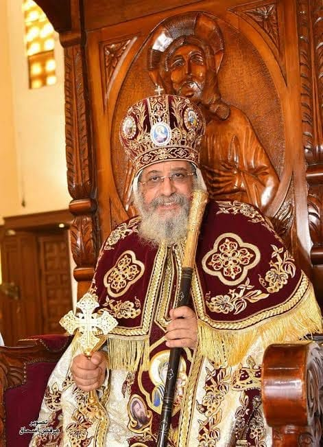

| الترتيب البابوي: | البطريرك المائة والثماني عشر (118) |
| الاسم قبل الرهبنة: | وجيه صبحي باقي سليمان |
| فترة الرعاية: | منذ نوفمبر 2012 حتى الآن |
| المؤهل المدني: | بكالوريوس الصيدلة (جامعة الإسكندرية) |
نبذة تاريخية مفصلة
تخرج البابا تواضروس الثاني من كلية الصيدلة وعمل مديراً لمصنع أدوية تابع لوزارة الصحة ب دمنهور قبل رهبنته. ترهب في دير الأنبا بيشوي بوادي النطرون عام 1988 باسم (الراهب ثيؤدور الأنبا بيشوي)، وسيم أسقفاً عاماً لإيبارشية البحيرة عام 1997، واختير بطريركاً عبر القرعة الهيكلية في 4 نوفمبر 2012.
أهم الإنجازات والتحول الرقمي والمؤسسي
- تطوير ومأسسة الخدمة: قام بتقسيم وتأسيس لجان المجمع المقدس بشكل أكثر تنظيماً، وأنشأ الأمانة العامة للمجمع لضمان كفاءة الإدارة الكنسية.
- الاهتمام بالطفل والشباب: أطلق "مهرجان الكرازة المرقسية" على نطاق أوسع، واهتم بإنشاء المدارس والجامعات القبطية مثل جامعة عيون موسى لتطوير منظومة التعليم.
- التحول الرقمي والميديا: دعم إدخال التكنولوجيا في توثيق بيانات الكنيسة وعضوية الشعب الكنسي عبر قواعد بيانات رقمية موحدة، وتطوير القنوات الفضائية والمواقع الرسمية للكنيسة.
- العلاقات المسكونية وحوار المحبة: وطّد العلاقات مع الفاتيكان وكنائس الروم الأرثوذكس والبروتستانت، وأسس مجلس كنائس مصر لتعزيز الحوار والعمل المشترك.
- افتتاح كاتدرائية ميلاد المسيح: ترأس الصلاة وافتتاح أكبر كاتدرائية في الشرق الأوسط بالعاصمة الإدارية الجديدة عام 2019 بمشاركة قادة الدولة.
أبرز مواقفه الكنسية والوطنية
عبر عن وعي وطني عميق في فترات صعبة مرت بها البلاد مستنداً لمبادئ السلام الكنسي والمجتمعي.
"وطن بلا كنائس أفضل من كنائس بلا وطن." - مقولته الشهيرة التاريخية عام 2013.